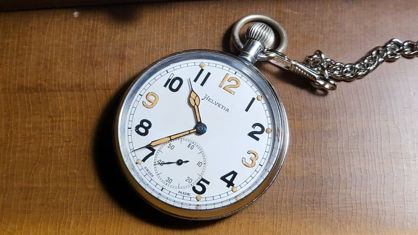
오늘 도착해서 헐레벌떡 올리는 2차세계대전 당시 영국군 병사와 장교들에게 지급된 회중시계입니다.
예나 지금이나 시간은 중요하죠. 프랑스와 영국, 독일과 스위스의 기술자들이 개발하고 만들어낸 기술의 결정체였던 시계는 19세기 말 대중화가 됩니다.
물론 개개인이 모두가 가질 수 있었던 것은 아니었습니다.
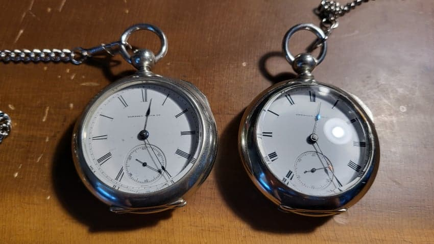
[고도의 산업화로 정밀한 시계를 규격화 시켜서 풀빵 찍듯이 찍어내던 나라인 미국에서나 대중화가 이뤄집니다. 사진의 시계는 19세기 말의 key wind 타입 회중시계인 햄든(HAMPDEN)의 MODEL1, 아메리칸(AMERICAN. 월섬의 전신)의 AT&CO. ]
미국의 시계들이 거대한 공장제 시계로 대량생산의 혁명을 이뤄냈지만, 알다시피 미국은 예나 지금이나 임금도 비싸고 물가도 타국보다 비쌌습니다. 위의 15석짜리 회중시계는 미국 시민에게도 한달치 월급에 해당할 만큼 고가의 시계였는데 유럽 입장에서는 훨씬 비싸게 느껴졌을겁니다.
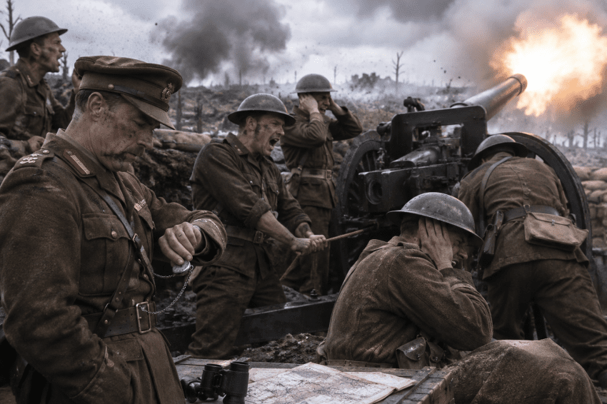
하지만 아무리 비싼 시계라 해도 전쟁을 수행하는 군인들에게 시간을 아는 일은 굉장히 중요한 일이었습니다.
1915년 8월 7일, 영국의 대패로 마무리된 갈리폴리 작전 중 넥 전투 당시 일화입니다.
호주군 제 3 경기병여단은 오전 4시30분이 되자마자 포격이 끝남과 동시에 오스만군 진지로 돌격하기로 되어 있었습니다.
근데 분명 30분에 종료되어야할 포격이 23분에 멈추고 전장이 고요해집니다. 7분의 시간은 오스만군이 반격을 준비하기에 충분한 시간이었죠. 보병장교들은 당황하고 상부에 물어보지만 상부에서는 예정대로 돌격하라는 명령이 내려옵니다.
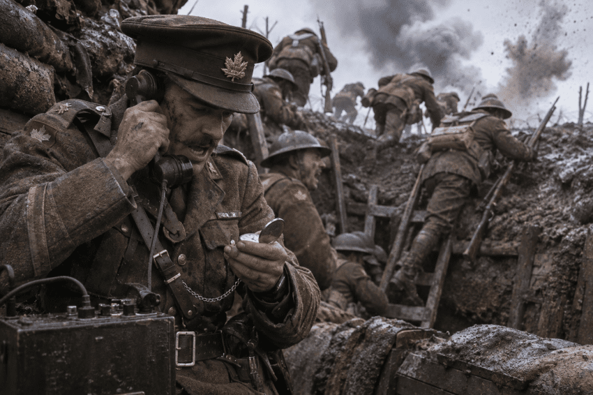
이 말도 안되는 상황에서 장교진과 상부가 입씨름을 하는 사이에도 호주군은 오스만군 진지로 돌격을 시작했고, 결국 15분만에 240여명이 죽는 대학살이 벌어집니다.
상부는 이 상황에서 3차 돌격까지 진행하라는 명령을 내렸고 수백명의 병력이 덧없이 죽어버렸죠.
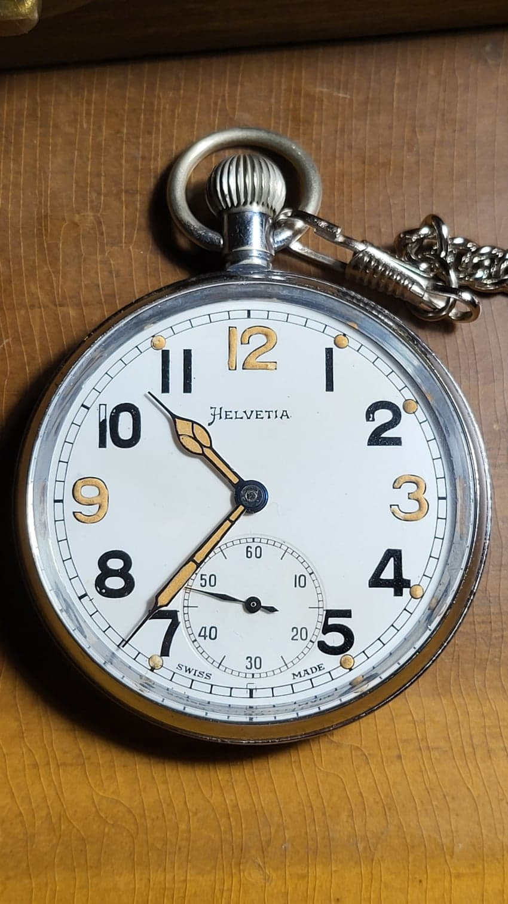
시간동기화가 얼마나 중요한지, 그리고 정확한 시간을 아는 것이 얼마나 중요한지 보여주는 사례입니다. 때문에 전 세계 군에서는 일정 시간마다 시간동기화를 하는 관례가 자리잡고 국군도 예외는 아닙니다.
웃기는 건 호주군 장교들이 전날에 동기화를 하고 온 탓에 다들 왜 벌써 끝났지?하고 있었다는거죠. 포병대가 삽질했다는 말도 있지만 사실은 저 너머에....
아무튼!
2차대전이 시작되기 직전, 유럽인이라면 누구나 전쟁이 목전에 다가왔다는 것을 알던 1939년에 영국 육군성은 전쟁에 시계수요가 엄청날 것이라는 것을 알고 스위스에 시계를 주문합니다.
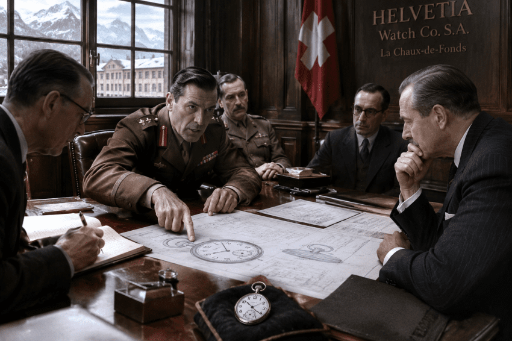
여러 업체들을 전전했는데, CYMA, MOERIS, HELVETIA, DOXA, OMEGA등 내로라하는 업체들을 만나서 급하게 시계를 조달하죠.
물론 일반적인 시기처럼 군의 요구사항을 늘어놓으며 한가하게 조건을 맞출 시간은 없었고
1. 야광 시곗바늘과 시계다이얼
2. 크롬도금 비귀금속 케이스
3. 검정색/흰색 다이얼
4. 정확한 시간을 유지할 15석(jewels) 구조
5. 뒷뚜껑을 눌러 끼우는 간단한 밀폐구조
정도로만 타협 후 현재 생산되는 무브먼트 중 해당 요구조건에 부합하는 무브먼트로 시계생산을 요청합니다.
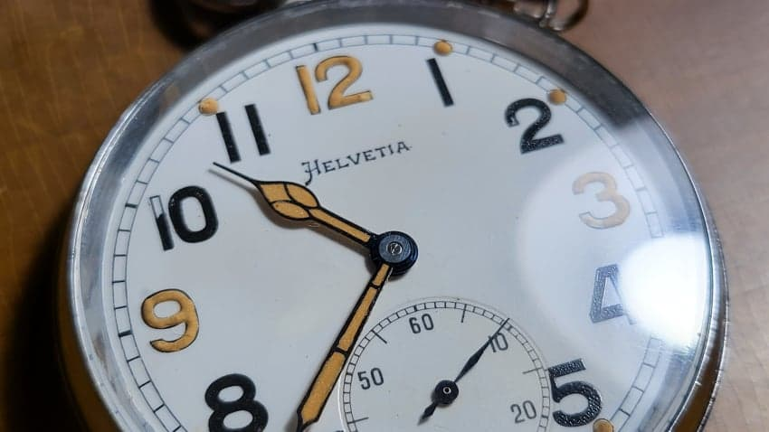
때문에 전쟁 전처럼 GS.MK2같은 명칭 대신 GSTP = General Service Trade Pattern이라는 명칭을 붙인 시계가 등장했고 이것이 'GSTP시리즈' 영국군 군용 회중시계의 시작이 됩니다.
이는 상용규격을 기반으로 한 군용 이라는 뜻이고, 그 당시 너무나도 급했던 영국군의 상황을 대변하죠.
웃긴 건 같은 요구조건으로 독일군도 시계를 의뢰했었다는 겁니다. 독일군과 영국군이 헬베티아에서 같은 시계를 조달받은 상황이 된거죠.
어?
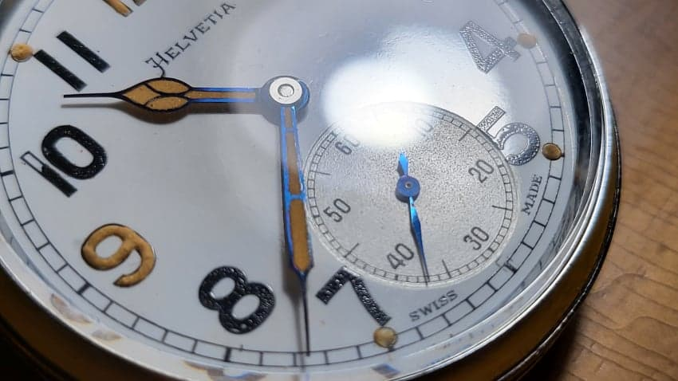
군용이지만 상용을 기반으로 했기에 군 냄새가 그나마 덜 나는 회중시계였고 그냥 일상적으로 쓰기에 그만인 회중시계였습니다. 블루핸즈, 에나멜 다이얼, 16사이즈급으로 생산된 이 시계는 영국 군납품 특유의 표식인 '브로드 애로우'문양을 찍고 영국군에 조달됩니다.
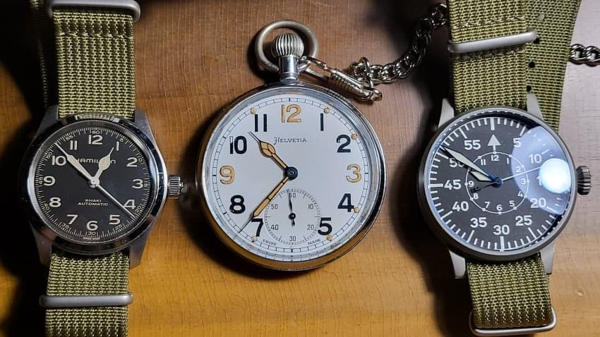
해물탕 각기필드랑 라코의 라이프치히와 비교한 모습.
시인성을 중시한 시계답게 큼직한 바늘, 큼직한 숫자가 특징입니다.
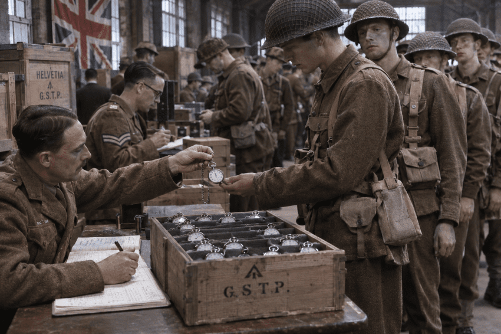
고급인력을 대상으로 한 손목시계와는 다르게 행정병, 해군, 포병, 말단 지휘관/지휘자에게도 보급되었고, 각 병사에게 지급됨과 동시에 장부에 적어서 누구에게 뭘 지급했는지 꼼꼼하게 관리하려 했습니다만
아시다시피 전장의 격한 상황과 급박한 현실로 인해 재고관리가 제대로 되긴 힘들었습니다. 방법은 계속 주문하는 방법밖엔 없었죠.
실용성을 극대화한 양파용두. 장갑낀 손으로도 돌리기 편하게 큼직한 용두를 달았습니다.
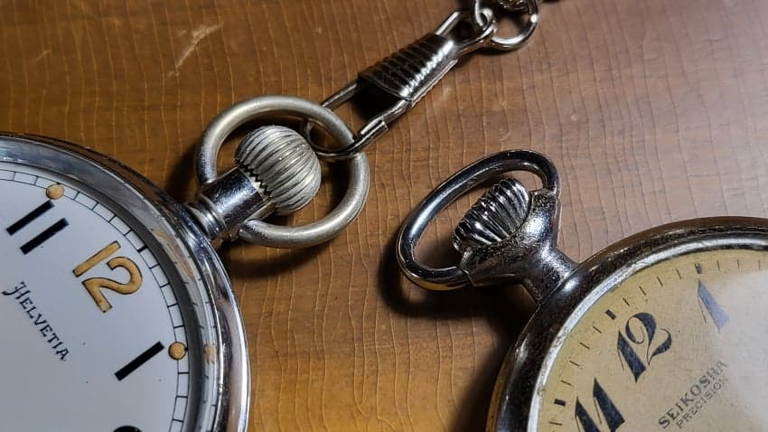
실용성의 대명사라고 볼 수 있는 1954년식 세이코샤의 철도시계와 비교. 둘다 돌리기 쉬운 양파용두를 채택해서 그 당시 우아한 신사시계들의 특징인 작은 용두와는 거리가 먼 크라운이 보입니다.
영국군용이 광이 많이 죽었는데, 앞서 설명드렸다시피 이당시 실용시계들은 황동에 크롬도금을 해서 새거일때는 반짝거렸지만 좀 쓰면 닳아서 저렇게 누리끼리한 황동이 드러났습니다.
정밀함을 극한까지 추구했던 독일의 루프트바페용 Beobachtungsuhr(흔히 플리거라고 부르는 그것)은 독일 전쟁해군 천문대에서 일일이 오차를 조정해서 항법사들에게 지급했습니다. 폭격기 승무원들에게는 정확한 시계를 이용한 항법이 작전성공을 넘어 생존까지 달려있었기 때문이죠.
하지만 요 회중시계들은 그 용도가 아니었기에 납품 받자마자 바로 지급하곤 했습니다. 일오차가 15초 내외였다고 합니다만, 지금과는 다른 재질의 윤활유, 전장의 먼지로 인해 그 오차는 더 커졌을 겁니다.
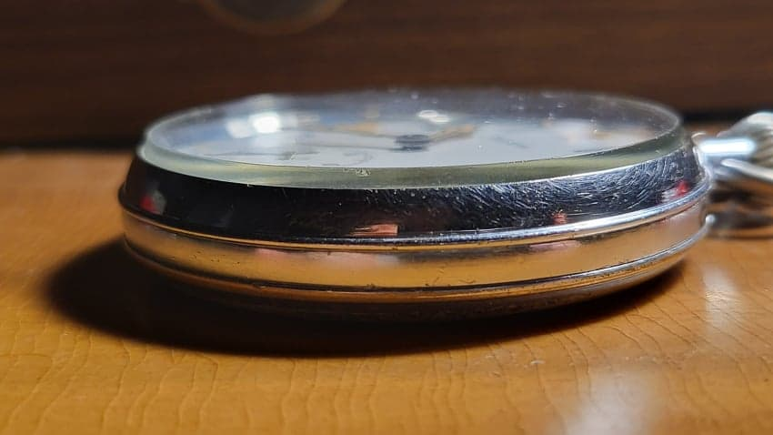
옆모습.
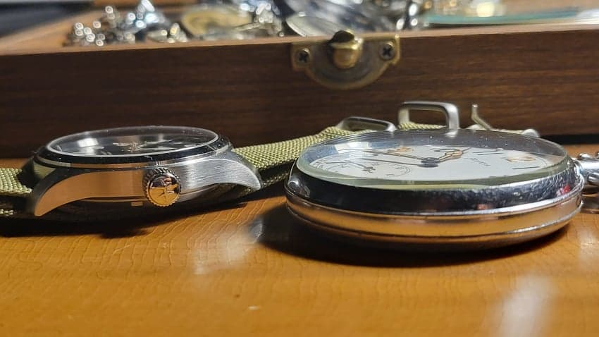
각기필드머피와 비교. 지금 봐도 굉장히 얇습니다.
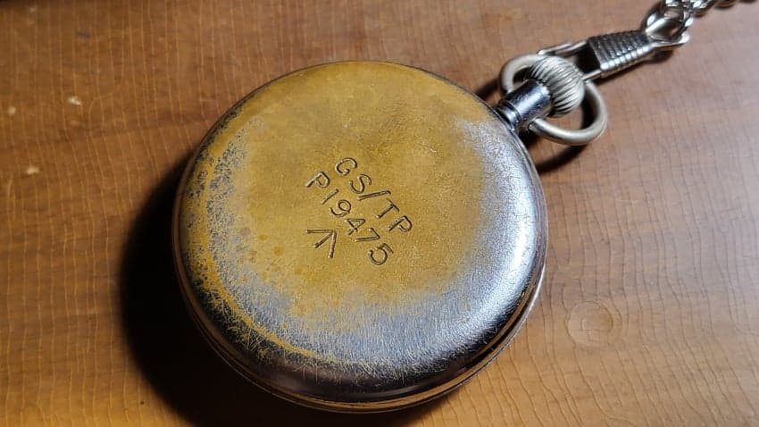
전장에서 구르느라 벗겨지고+80년이 넘은 세월의 흔적으로 인해 황동이 보입니다.
GS/TP '상용품을 기반으로 한 군용규격'이라는 글자와
P19475는 조달번호
<- 는 영국군용 표시인 일명 '브로드 애로우'
1945년 전쟁이 끝나고 수많은 군인이 제대하자, 영국 전쟁부는 수십만개를 조달했던 이 회중시계들을 유지할 여력도, 생각도 없었고, 전쟁이 끝난 그 해부터 경매로 민간에 죄다 불하해 버립니다.
한 업체는 GSTP를 비롯한 시계류를 4만개나 낙찰받아서 간단하게 정비 후 민간에 팔았죠. 전후에 군용품이 민간에 나도는 일은 흔했습니다.
전쟁에서 파손되고, 전역자들이 은근슬쩍 슈킹했음에도, 불하된 양 만으로도 수십만개나 되었기에 아직도 영국 경매에선 찾아보기 쉽습니다.
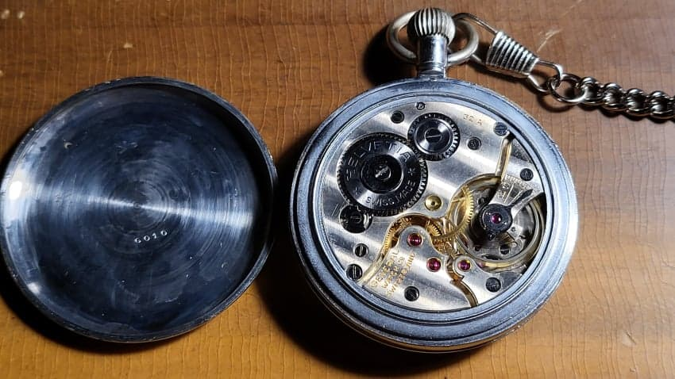
내부모습. 장식이라곤 1도 없는 실용성을 극대화한 모습입니다.
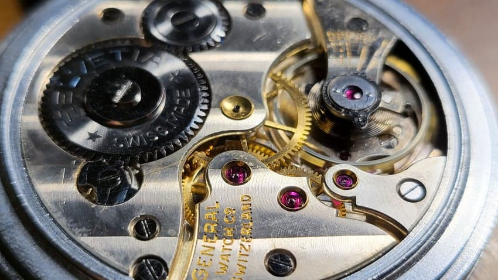
그래도 15석이라는 쥬얼을 넣어서 7석 이하의 보급형들보다는 마모에 강하고 정확도를 오래 유지할 수 있었습니다.
이 당시 영국이 왜 대량생산의 대명사였던 미국의 월섬이나 엘진을 안 썼나 싶지만,
아시다시피 미국 시계들은 비쌌을 뿐더러, 당장 조달 가능한 곳이 스위스가 유리했고 또 스위스도 많이 치고 올라와서 스위스에서 대부분 충당이 가능했기 때문이었습니다.
물논 월섬,엘진에서도 조달을 받지만, 이 동네는 1941년 이후로 자기네 포탄신관 제작만으로도 정신이 없어서 미국으로부터의 조달은 포기해 버립니다.
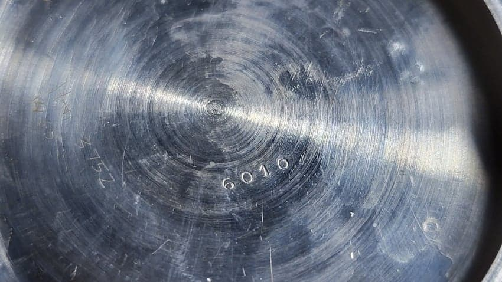
뚜껑 내부의 HELVETIA사의 6010규격 뚜껑과 수리공들의 수리표시 흔적.
작동영상.
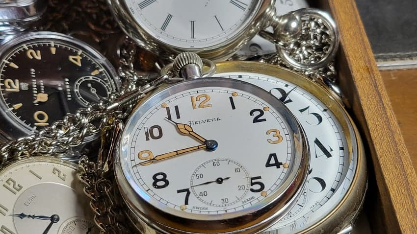
그럼 20000 총총
- dc official App
댓글
수집 당시 댓글 46개
익명L · 11.05 09:59:55
시계요정 · 11.05 10:00:39
ㅇㅇ · 11.05 10:29:05
개구리감별사 · 11.05 17:13:02
SBR · 11.05 18:40:55
yukon · 11.06 01:54:13
marineblue · 11.06 03:18:54
땨뗘(봇) · 11.08 07:40:06
유르시아 · 11.08 07:40:13
메챠코 · 11.08 07:42:32
ㅇㅇ · 11.08 07:44:27
· ㅇㅇ · 11.08 10:03:10
ㅇㅇ · 11.08 07:45:16
ㅇㅇ · 11.08 07:51:40
ㅇㅇ · 11.08 07:58:27
ㅇㅇ · 11.08 08:01:16
ㅇㅇ · 11.08 08:08:33
DEXT · 11.08 08:10:52
♡남자살려♡ · 11.08 08:11:19
ㅇㅇ · 11.08 08:14:08
포도쥬스. · 11.08 08:32:31
· ㅇㅇ · 11.08 08:37:18
· 포도쥬스. · 11.08 08:44:10
ㅇㅇ · 11.08 08:50:34
시계의악마: 시계 다뿌수면 죽음
ㅇㅇ · 11.08 08:54:53
ㅇㅇ · 11.08 09:00:05
· 보트퍼커 · 11.08 09:23:21
ㅇㅇ · 11.08 09:30:50
ㅇㅇ · 11.08 09:52:23
ㅇㅇ · 11.08 09:54:28
ㅇㅇ · 11.08 09:58:28
ㅇㅇ · 11.08 10:06:59
ㅇㅇ · 11.08 10:27:48
o o · 11.08 10:37:40
· o o · 11.08 10:59:41
o o · 11.08 10:37:45
· o o · 11.08 12:09:54
· o o · 11.08 12:10:04
· o o · 11.08 12:10:35
· o o · 11.08 12:10:40
o o · 11.08 10:37:50
ㅇㅇ · 11.08 12:21:53
Gloved 1 · 11.08 13:03:24
JungNu · 11.08 14:21:07
ㅇㅇ · 11.08 15:50:21
ㅇㅇ · 11.08 17:31:13